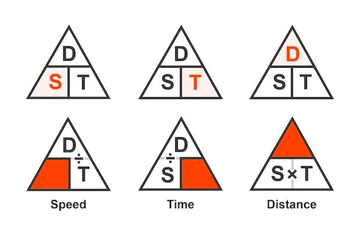

Rate Of Change

Let's start with the simplest example of using rational functions in real life. Rational function helps to identify the speed, distance, and time of the objects in motion. For instance, when you try to calculate how long it will take you to reach your destination in extreme traffic hours, it is the rational function you are using.